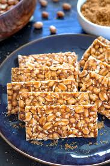

Peanut Chikki

Peanut Chikki, also known as "Peanut Brittle," is a crunchy, sweet snack made from roasted peanuts and jaggery. This traditional Indian treat is often made during festivals like Makar Sankranti and is a perfect combination of sweetness and nuttiness.
Ingredients:
- 1 cup peanuts (roasted and skins removed)
- 1/2 cup jaggery (grated or chopped)
- 1 tablespoon ghee (clarified butter)
- 1/2 teaspoon cardamom powder (optional)
- 1 tablespoon water
Instructions:
-
Prepare the peanuts:
- Heat a pan and dry roast the peanuts on medium heat until they are golden and crunchy. Once done, remove the skins and set the peanuts aside.
-
Prepare the jaggery syrup:
- In the same pan, add ghee and jaggery. Cook on medium heat until the jaggery melts completely.
- Once the jaggery is melted, add water and cardamom powder. Stir well and cook for a few more minutes until the syrup thickens slightly and reaches a single-thread consistency.
-
Mix peanuts and jaggery:
- Quickly add the roasted peanuts to the jaggery syrup. Mix well, making sure the peanuts are fully coated with the syrup.
- Pour the mixture onto a greased tray or parchment paper and flatten it evenly with a spatula.
-
Set the chikki:
- Allow the mixture to cool for about 10-15 minutes. Once it is cool enough to handle, cut it into pieces using a sharp knife.
- Let the chikki set for a few more minutes before serving or storing it in an airtight container.
Serving:
Peanut Chikki can be served as a snack or enjoyed as a dessert after meals. It makes for a perfect homemade gift, especially during festive occasions 😊.